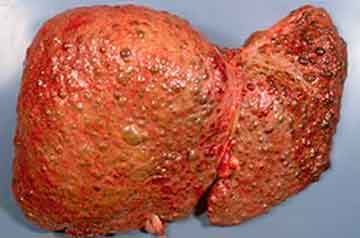

اطلع على الحقيقة المرعبة بشأن فطريات الأظافر قبل أن تضطر لإزالة أظافر قدميك كاملة!
لا يُمكن التقليل من شأن تلك
الفطريات القاتلة!
ملحوظة المحرر: تشير الإحصاءات إلى أن 33% من سكان هذا البلد يعانون التهابات فطرية في أظافرهم وأقدامهم. وقد تختلف الأسباب، من ضعف الجهاز المناعي إلى الأحذية غير المناسبة.
اليوم، سيشرح لنا أحد المتخصصين في مركز علاج الأمراض الجلدية، حسام محمود، كيفية التخلص من هذه الالتهابات الفطرية الخطيرة والضارة لأظافر القدم في غضون شهر واحد فقط في منازلنا بفضل التطورات الطبية الحديثة.
حسام محمود
أخصائي في مركز علاج الأمراض الجلدية
ويمارس الطب منذ 27 عامًا.
- مرحبًا د/ حسام! سنبدأ الحديث بالسؤال الأكثر أهمية، هل صحيح، بالنظر إلى عدد من يعانون الالتهابات الفطرية في أظافرهم، أن الوطن العربي من بين أخطر الحالات؟
- نعم، هذا صحيح. لقد كان الوطن العربي واحدًا من المناطق الرائدة في الالتهابات الفطرية منذ وقت لا بأس به. والسبب في ذلك قد يكون الظروف، وقلة النظافة في الأماكن العامة، وتجاهل الهيئات المنوطة وعدم اكتراثها باحتياجات الناس.
- دكتور حسام، ما مدى خطورة هذه الالتهابات الفطرية التي تصيب الأقدام والأظافر؟
- يعتقد الكثير من الناس أن الالتهابات الفطرية التي تصيب القدمين والأظافر مجرد مشكلة تجميلية وأنها ليست خطيرة على نحوٍ خاص. ولكن هل هي خطيرة فعلًا؟ دعونا أولًا نوضح بعض الأمور!
إن الالتهابات الفطرية التي تصيب القدمين والأظافر، والمعروفة باسم "التهاب الظفر الفطري"، مهددة للغاية في المراحل المتقدمة من المرض. وقد يسبب "التهاب الظفر الفطري" غير المعالج ردود فعل تحسسية ويضعف جهاز المناعة ويؤدي إلى نوبات من الأمراض المزمنة. ولذلك، إذا كان لديك أي مرض مزمن، فإن الالتهابات الفطرية ستزيد من احتمالية تفاقمها.
وهذا يعني أن مشكلة بسيطة في القدمين والأظافر قد تعرّض حياة الإنسان للخطر! كما نريد إضافة ما يلي:
أولًا، الالتهابات الفطرية ليست "مجرد مشكلة في القدم وأظافر القدم". إنها عدوى حقيقية للجسم بالطفيليات. قد تحدث هذه المشكلة الكبيرة مع الالتهابات الفطرية في القدمين والأظافر بسبب الطفيليات التي استوطنت جسمك. ثانيًا، الالتهابات الفطرية في حد ذاتها ليست مرضًا مميتًا، إنها مجرد محفز لجميع المشكلات الطبية الأخرى.
وهذا يعني أنه إذا كنت تعاني مشكلات مزمنة في المعدة أو الكبد، فإن وجود التهابات فطرية تؤثر في جهاز المناعة سيُزيد تلقائيًا من احتمالية أن تصبح هذه الأمراض حادة بدلًا من مزمنة.
ماذا يحدث إذا لم نعالج الالتهابات الفطرية؟
مع الأشخاص الذين تزيد أعمارهم على 30 عامًا، تعُد الالتهابات الفطرية سببًا شائعًا للغاية لنزلات البرد وأمراض الربو وعدم انتظام عمل الأعضاء الداخلية. وفي هذا العمر، قد تسبب التهابات أظافر القدم في التهاب الجلد الذي ينتشر بسهولة بعد ذلك في جميع الجلد. ولذلك لا يمكن تجاهل علاج الالتهابات الفطرية. قد تؤدي المرحلة المتقدمة من المرض إلى وضع سيء من "التهاب الظفر الفطري"، ومضاعفات قد تهدد الحياة.
وننتقل إلى الآن إلى النقطة الأكثر أهمية...
مع الالتهابات الفطرية، يواجه الجسم بعض السموم مثل الزانثوميجينين والبنسلين والفيوميلين وغيرها من المواد الشبيهة بالمضادات الحيوية. وعند دخول هذه المواد إلى الجسم قد تسبب أمراضًا خطيرة. من فضلك، ألق نظرة على الصور التالية، على سبيل المثال (للبالغين فقط)
انتشار المرض في الجسم والذراعين

متلازمة ستيفنز جونسون وتَقَشُّرُ الأَنْسِجَةِ المُتَمَوِّتَةِ
البَشْرَوِيَّة (قاتلة في 80% من الحالات)

إذا لم تتخذ إجراءً في بداية الالتهابات، فقد ينتقل من خلال الدم إلى الأعضاء الداخلية، وفي حالات ضعف جهاز المناعة، قد يتسبب في حدوث مضاعفات: الضرر الناتج عن الحساسية السامة للقلب والكبد والأعضاء الداخلية والكلى.
وإذا لم يتلق هذا النوع من المرضى المساعدة في الوقت المناسب، فسيجدون صعوبة في التعافي بنسبة 95%.
وإذا لم تُعالج الالتهابات الفطرية في بدايتها، فسوف تدمر أظافرك تمامًا في غضون بضع سنوات، مما يؤدي إلى فقدانها.
عواقب الالتهابات الفطرية غير المعالجة على أظافر القدم
الكبيرة

في بعض الحالات، يُمكننا علاج هذه الالتهابات الفطرية في بداية المرض. وفي حالات أخرى، تكون الالتهابات أكثر شدة، وبالتالي فإن العلاج يتطلب وقتًا أطول. والمشكلة أيضًا أن المرضى لا يطلبون المساعدة إلا متأخرين، وهم يعتقدون أن الالتهابات الفطرية ستختفي بطريقة ما وستعود الأمور إلى طبيعتها. والحقيقة أن الطفيليات لن تختفي من تلقاء نفسها. وإذا تركت دون علاج ، ستنتشر الالتهابات الفطرية حتى تغطي قدمك بالكامل وجميع أظافرك.
يدعي البعض أنه عليك اتباع الحكاية القديمة للزوجات بشأن إزالة الالتهابات الفطرية: غسل الظفر بخل تركيز 2% وفركه بكمية صغيرة من بيروكسيد الهيدروجين. ولا فائدة من ذلك. ولن يؤدي إلا إلى تفاقم الأمور، لأنه يخلق بيئة قلوية مواتية لنمو الالتهابات الفطرية وانتشارها في جسم الإنسان. ولذلك ينبغي أن تكون على دراية بما يلي:
لا تمتلك الصيدليات الحل النهائي لعلاج الالتهابات الفطرية!
الخيار الأول - العلاج الجهازي
دعني أخبرك بحقيقة التركيبات، التي يصفها الأطباء، التي تكلفك الكثير من المال، لكنها لا تعمل. هذه التركيبات فقط لإخفاء الأعراض و"تحجيمها" لفترة من الوقت. ولكن يظهر المرض مرة أخرى في الوقت المناسب! كما أن الآثار الجانبية المحتملة هي تهيج الجلد والتعرق والحساسية.
الخيار الثاني - قطرات وطلاء الأظافر
عادة ما تسبب هذه المواد ردود فعل تحسسية شديدة. هذا مفهوم، لأن تسمم الجسم يبدأ بمجرد وضع المادة المضادة للفطريات على بشرتك. بالطبع، قد يختلف نوع ومستوى رد الفعل باختلاف الأشخاص.
ولكن ما الذي يمكننا استخدامه لعلاج الالتهابات الفطرية للقدم والأظافر؟
لعلاج الالتهابات الفطرية حقًا، علينا القضاء على جميع الجراثيم ومنع تكاثرها وانتشارها في جميع أنحاء الجسم. لم يتوفر مثل هذا المنتج حتى وقت قريب. جميع المنتجات المضادة للفطريات الموجودة لها تأثيرات قصيرة المدى فقط. وفي عام 2017، جهّز مركزنا تركيبة تقضي على الجراثيم، وبالتالي تمنع تكاثرها وانتشارها. وأطلقنا على التركيبة اسم "". كريم مضاد للفطريات بزيت الكافور وزيت شجرة الشاي. حيثُ إن التركيبة تخترق الأنسجة المصابة جيدًا وتدمر الفطريات وتعزز التجدد الطبيعي.
احتجنا إلى 10000 ساعة تقريبًا من البحث وما يقرب من 3 ملايين جنيه لتحضير هذا الكريم. وخصصت الرابطة أموالًا للبحث وتطوير علاج فعال للالتهابات الفطرية. وقبل الوصول إلى التركيبة النهائية، جرّب علماؤنا عددًا من التركيبات الأخرى للعثور على الخصائص العلاجية اللازمة للكريم.
1. لقد تم اختبار
فعالية كريم باستخدام الطرق القياسية (عدد المرضى المتعافين
مقارنة بإجمالي المشاركين، أي 100 متطوع) والنتيجة كما يلي:
- التخلص من الالتهابات
الفطرية لأظافر القدم بنسبة 99.3%
- التخلص من الالتهابات الفطرية للقدم بنسبة 99.7%
-
الحصول على جلد قدم نقي بنسبة 95%
- التخلص من الروائح الكريهة للقدم وأظافر القدم بنسبة 100%
- التخلص من عرق القدم بنسبة 90%
يعني "العلاج الناجح" هنا إزالة الفطريات والأمراض المصاحبة لها، وعدم تكرار المرض خلال عام واحد.
2. لا يُسبب هذا الكريم أي آثار جانبية، مثل الحساسية.
3. أصبح كريم معروفًا بالتركيبة الرائدة لعلاج الالتهابات الفطرية في
القدمين والأظافر.
أعتقد أن القراء يرغبون في معرفة أين يمكنهم شراء كريم . كما سمعنا أنه يمكن شراؤه بخصم، هل هذا صحيح؟
بعد مفاوضات طويلة، تمكنا أخيرًا من بدء برنامج يُسمى "حرر نفسك من الالتهابات الفطرية". في الواقع، الكريم متوفر بخصم 50%، لأن تحقيق الربح ليس هدفنا الأسمى، ولكن إعطاء كل إنسان، بغض النظر عن وضعه المالي، إمكانية التخلص من الالتهابات الفطرية والعيش بسعادة و الحياة النشطة. والهدف من البرنامج مساعدة الناس على تخلص أقدامهم وأظافرهم من الطفيليات التي قد تمنعهم من العيش حياة طبيعية وقد تهدد صحتهم. فخورون للغاية بإطلاق هذا المشروع في وطننا العربي! هناك مبادرات مماثلة لم تؤتي ثمارها حتى الآن!
إذا كنت ترغب في المشاركة في البرنامج، فقط أدخل اسمك ورقم هاتفك على الموقع الرسمي للمنتج.
- دكتور حسام، هل تود إضافة شيء قبل أن ننهي حديثنا؟
- أريد فقط أن أضيف شيئًا واحدًا: الالتهابات الفطرية للقدمين وأظافر القدمين ليست مجرد مشكلة تجميلية؛ إنها مرض خطير للغاية قد يؤدي إلى عواقب وخيمة. والأفضل معالجة المشكلة قبل فوات الأوان.
® - الكريم متوفر على الموقع الرسمي للشركة المصنّعة.


ازيك يا حسني، يا ريت تعرفنا النتائج النهائية ايه عندك وايه خلاصة تجربتك مع الكريم. احنا بنجاول نجمع أكبر قدر ممكن من البيانات والمعلومات عن الكريم من خلال تجاربكم عشان ننزل بيه في الصيدليات بسعر متناول من غير زيادات ملهاش لازمة.
حسام